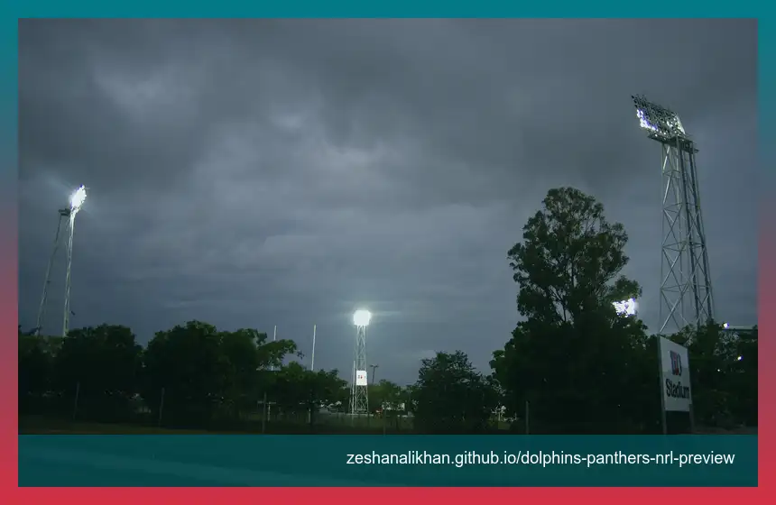

Panthers rebound angle
Penrith enter after their first defeat of the season, so the match has a clearer story than a routine top-side appearance.
The Dolphins meet the Penrith Panthers at TIO Stadium in Darwin on Friday, April 17, 2026. Kickoff is listed for 7:30 PM ACST / 8:00 PM AEST, which is 6:00 AM ET / 3:00 AM PT for US readers. This is rugby league, and the strongest search angle is Panthers' top-position status meeting a Dolphins home-game push in the Northern Territory.
This fixture has more search pull than a plain Round 7 listing. The Panthers were shown as the top-position side in the match listing, but they also arrive after their first defeat of the season, a 32-16 loss to the Bulldogs. That creates a direct rebound angle around Nathan Cleary, Isaah Yeo, and the Penrith spine.
The Dolphins side of the story is different but just as useful. Their club build-up frames Darwin as a home-away-from-home push tied to a three-year Northern Territory partnership. That makes TIO Stadium more than a venue label. It is the reason this match has a local event hook.

Penrith enter after their first defeat of the season, so the match has a clearer story than a routine top-side appearance.
The Dolphins' Top End match is tied to a multi-year Northern Territory home-game partnership, giving the fixture a location hook.
Izack Tago's 100th NRL game note, Liam Martin's absence, and Brad Schneider's bench role create useful supporting search intent.
The live board reads from local JSON and does not send users to an external match-centre button. It can be updated with original score, status, and short notes when the match window arrives.